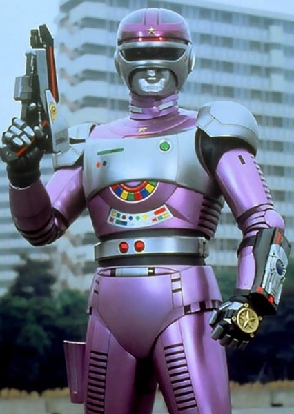

Tokusou Robo Janperson (Investigação Especial Robo Janperson, Tokusō Robo Janpāson) é um programa de televisão japonês de 1993 da franquia Metal Hero Series da Toei Company.
Os dois nomes dados a esta série pela Toei para distribuição internacional são Janperson ou Jumperson.
História:
A série gira em torno de Janperson, um detetive robótico que patrulha as ruas de Tóquio e luta contra três diferentes organizações do submundo que utilizam a supertecnologia para subjugar as massas.
Ao contrário da maioria dos Metal Heroes, um monstro da semana raramente é mostrado e a maioria dos vilões são criminosos semelhantes aos dramas policiais da televisão.

Janperson pronto para proteger as ruas de Tóquio
Personagens:
Janperson (ジャンパーソン, Janpāson) - Um andróide roxo e prateado que trabalha como detetive. Ele já foi um protótipo de robô de combate conhecido como MX-A1, enlouquecido pelo comando "Destroy Evil", que levou à sua desativação. Mais tarde, foi despojado da maior parte do armamento e reprogramado com emoções humanas pela jovem cientista Kaoru Saegusa. Tal como o Robo Vampire ou o RoboCop, defende a lei e é puramente mecânico. É visto como o tipo de polícia que nunca desiste tão facilmente. Também tem problemas em lidar com a sua vida anterior como MX-A1 quando é forçado a destruir o mal facilmente. Janperson é o quinto Metal Hero a ostentar o emblema da Agência Nacional de Polícia Japonesa, e o primeiro desde The Mobile Cop Jiban a lutar sozinho.
Gun Gibson (ガンギブソン, Gan Gibuson) - Um andróide cinzento e de braços pesados criado pelos Gang Guards (associados à Neo-Guild) para destruir Janperson, mais tarde mudou de lado e tornou-se o parceiro andróide de Janperson. Armado com duas armas - uma com bala mirante e outra com bala muda. Mais tarde, foi armado com uma poderosa bazuca que usou em batalha e tinha uma mota que usou durante as batalhas. Embora se pense que foi destruído por Bill Goldy perto do final, mostrou ter sobrevivido bem o suficiente e juntou-se à batalha final. Tinha uma namorada andróide chamada Carol, que também foi criada pelos Guardas do Gangue e foi morta pelos Guardas do Gangue durante a sua primeira batalha com Janperson. Carol foi revivida por Kaoru no final da série, apenas para ser morta novamente.
Kaoru Saegusa (三枝 かおる, Saegusa Kaoru)- Uma jovem cientista que é uma das criadoras de Janperson. Ela reativou e reprogramou Janperson depois de ele ter sido desligado pela primeira vez, colocando emoções humanas dentro dele. Ela recebe e dá informações a Janperson sobre o seu inimigo durante a série. Ela aparentemente traiu Janperson no final da série, destruindo a sua sede e revivendo a namorada andróide de Gun Gibson, Carol. Descobriu-se que estas são apenas as suas estratégias secretas para ganhar a confiança de Tatewaki/Bill Goldy e encontrar uma forma de ajudar Janperson a derrotá-lo.
Shuhei Saegusa (Saegusa Shuhei, Saegusa Shūhei)
- Um aluno da escola primária que é irmão mais novo de Kaoru.
Koujiro Komori (小森 好次郎, Komori Kōjirō)- Um detetive da polícia sénior. É mais conhecido pelo apelido de Batman do Departamento de Polícia Metropolitana (桜田門のバットマン, Sakuradamon no Battoman) devido ao seu apelido muitas vezes pronunciado incorretamente como a palavra japonesa para "morcego" (蝙蝠, kōmori). Embora capaz, caiu numa crise, tornando-se um polícia de terceira categoria e aparentemente incompetente. Apesar disso, Koujirou ainda mantém um ar elevado, delegando tarefas servis no seu parceiro júnior, Shiro Takaido, desde o pagamento da sua conta de alimentação até à sua higiene. Uma piada recorrente no programa é que ele parece sempre deparar-se com um caixote do lixo de plástico enquanto persegue criminosos, sendo principalmente atirado de cabeça para dentro dela. Koujirou ressente-se de ter sido ofuscado por Janperson e decide desmascarar a verdadeira identidade do misterioso herói. É interpretado por Takahiko Ota, que já interpretou Shingo Takasugi/Green Two em Choudenshi Bioman.
Shiro Takaido (高井戸志郎, Takaido Shirō)Shiro Takaido (高井戸志郎, Takaido Shirō) - detetive subordinado júnior de Komori. Já não aparece após os primeiros 13 episódios. É interpretado por Junichiro Katagiri, que já interpretou Shunshuke Hino/Yellow Turbo em Kousoku Sentai Turboranger.
Aki Wakabayashi (若林 アキ, Wakabayashi Aki)
- Repórter da TV JBC. Embora tenha uma visão positiva de Janperson, sente-se revoltada com a incompetência da polícia (na verdade, no final do primeiro episódio, quando Komori via as notícias, chama a polícia de incompetente), entrando em confronto com Komori. Ela não aparece mais após o episódio 6.
R-Zico (アールジーコ, Ārujīko)
- Um robô aliado de Janperson, pode ligar-se ao Jan Digic para se tornar o Canhão Zic. Tem tendência a chamar Janperson de "Janper-chan" (apenas na primeira aparição), Gun Gibson de "Ganmodoki" e Kaoru de "Mammy".